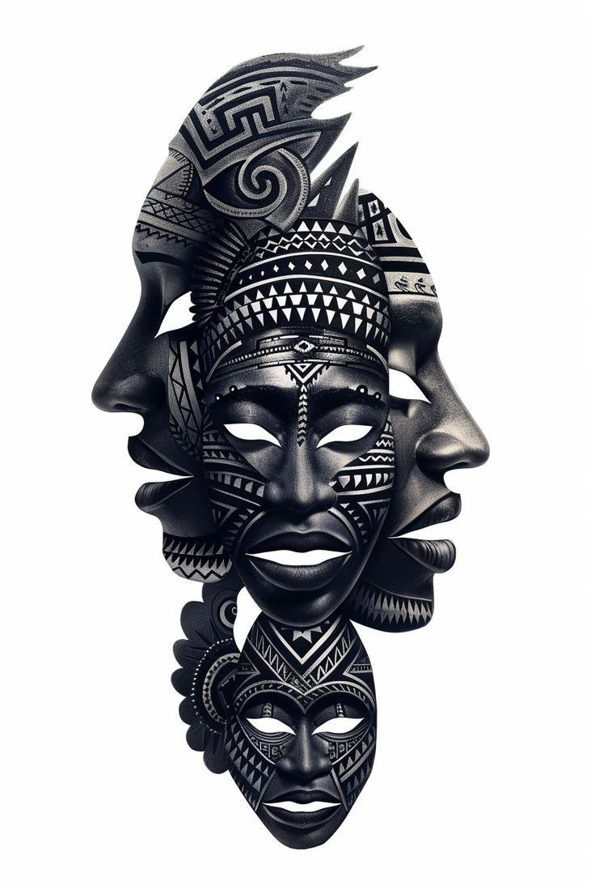

FullyMask Camera
Install FullyMask Camera for Windows and use one camera device for your browser feed or integrated webcam.
Download for Windows Windows 10/11 64-bit · Installer size: 7.6 MB
Install FullyMask Camera for Windows and use one camera device for your browser feed or integrated webcam.
Download for Windows Windows 10/11 64-bit · Installer size: 7.6 MB